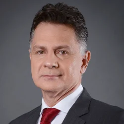
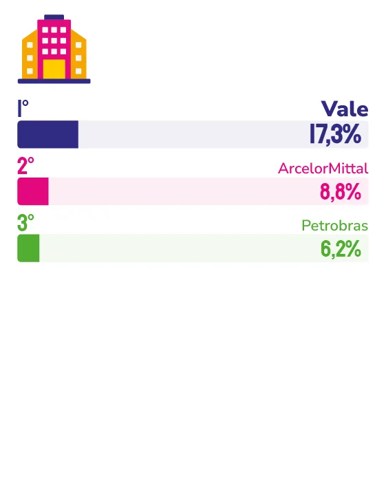

GRANDE EMPRESA
Líder na memória espontânea dos capixabas como Grande Empresa, a Vale chega a 2026 com 60 anos da Unidade Tubarão, previsão de aplicar cerca de R$ 12 bilhões até 2030 em projetos correntes e de capital no estado e uma presença que vai muito além da mineração.
Seis décadas da unidade operacional que integra minas, ferrovia e porto. Mais de R$ 12 bilhões previstos em investimentos no Espírito Santo até 2030. E uma presença que atravessa gerações e se traduz em algo que nenhum dado financeiro consegue capturar sozinho: a confiança espontânea dos capixabas.
É com esse peso e orgulho que a Vale chega a 2026 sendo a Grande Empresa mais lembrada pela população da Grande Vitória na pesquisa Marcas Ícones, um reconhecimento que, para o diretor de relações institucionais da companhia, Marcelo Klein, tem raízes bem definidas.
“Os 60 anos da Unidade Tubarão refletem a relevância do Espírito Santo para a história e para o desenvolvimento da Vale. Aqui nasceu um conceito inovador de sistema integrado que trouxe ganhos importantes para nossa logística e permanece essencial para a estratégia da empresa. Ao longo desse período, evoluímos e construímos uma relação próxima com a sociedade, que acompanha nossas transformações e contribui para direcionar nossos próximos passos.”
A Unidade Tubarão nasceu em 1966 com a inauguração do Porto de Tubarão, marco que transformou Vitória na principal rota de escoamento do minério de ferro extraído em Minas Gerais e transportado pela Estrada de Ferro Vitória a Minas (EFVM). Logo em seguida, com a primeira usina de pelotização, inseriu o Espírito Santo numa nova fase industrial.
Seis décadas depois, a Unidade Tubarão opera com sensores, inteligência artificial e tecnologias de ponta. No porto, carregadores de navios funcionam de forma totalmente remota e contam com sistemas anticolisão. A umidade do minério é monitorada com apoio de IA para reforçar a segurança no embarque. Drones realizam inspeções subaquáticas. E em 2023, a unidade inaugurou a primeira usina de briquetes de minério de ferro do mundo, produto capaz de reduzir em até 10% as emissões de gases de efeito estufa na produção de aço.
Na ferrovia, a EFVM registrou em 2025 o melhor índice de eficiência energética da última década, resultado de melhorias operacionais que reduziram o consumo de diesel e as emissões de CO₂. Diariamente, sistemas de inspeção automática baseados em IA avaliam cerca de três mil vagões com câmeras, sensores e algoritmos, integrados ao Centro de Controle Operacional em Vitória.
O compromisso ambiental também se traduz em números expressivos: o Plano Diretor Ambiental da Unidade Tubarão, com investimento de aproximadamente R$ 5 bilhões nos últimos sete anos, permitiu reduzir em 93% as emissões das fontes difusas na Unidade Tubarão em relação a 2010. E os próximos anos guardam ainda mais: a Vale prevê investir cerca de R$ 12 bilhões no Espírito Santo até 2030, em projetos nas áreas de gestão hídrica, modernização de instalações e substituição de equipamentos.
Essa presença se estende para além da operação. Em 2025, as compras destinadas às operações e projetos no estado somaram R$ 8,8 bilhões, sendo R$ 4,2 bilhões com fornecedores locais. Empresas capixabas também forneceram produtos e serviços para operações da companhia em outros estados, com faturamento de R$ 1,7 bilhão, o maior volume registrado nos últimos quatro anos. No campo cultural, R$ 120,5 milhões foram investidos via Lei Rouanet nos últimos cinco anos, em 88 projetos. E em 2026, 77 iniciativas esportivas patrocinadas pela Vale no ES, pela Lei Federal de Incentivo ao Esporte, totalizam R$ 30 milhões em investimentos.
Mais do que uma operação de mineração e logística, a Unidade Tubarão consolidou-se como um importante agente de desenvolvimento regional. Os números de 2025 evidenciam o impacto:
Para o presidente da Vale, Gustavo Pimenta, o que sustenta tudo isso é uma relação que se constrói com o tempo e com escuta. “Celebrar os 60 anos da Unidade Tubarão é reconhecer a importância do Espírito Santo para a Vale e para a mineração brasileira. Foi aqui que nasceu uma operação pioneira, baseada na integração entre mina, ferrovia e porto, que transformou nossa logística e segue estratégica para o presente e o futuro da companhia. Esse legado, construído ao longo de seis décadas, se sustenta também no diálogo contínuo com a sociedade, que acompanha a evolução da unidade e orienta nossas decisões.”
É essa teia de investimento, inovação, cultura, esporte e diálogo que Klein resume ao falar do que o reconhecimento dos capixabas representa para a empresa. “Esse reconhecimento traduz a relação construída ao longo do tempo com a população capixaba. É resultado de uma atuação voltada ao desenvolvimento do estado, da presença próxima nas comunidades e dos avanços em práticas mais sustentáveis. Também reforça o nosso compromisso com a geração de valor e com um olhar constante para o futuro.”
Com as operações da Unidade Tubarão, a Vale contribuiu para consolidar o Espírito Santo como um estratégico polo logístico e de exportação mundial, impactando diretamente o desenvolvimento econômico do estado. A presença, reverbera ainda, em investimentos sociais, culturais e ambientais que fazem a diferença no dia a dia de milhares de capixabas.


Marcelo Klein
Diretor de relações institucionais da companhia
“Os 60 anos da Unidade Tubarão refletem a relevância do Espírito Santo para a história e para o desenvolvimento da Vale. Ao longo desse período, evoluímos e construímos uma relação próxima com a sociedade, que acompanha nossas transformações e contribui para direcionar nossos próximos passos.”
104
